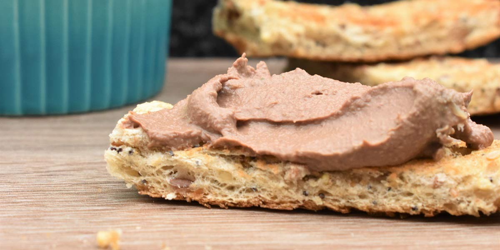

Chicken Liver Paté
Recipe Specification
Ingredients List
| Ingredients | Quantity |
|---|---|
| Unsalted Butter | 300g |
| Vegetable Oil | 30ml |
| Shallots | 2x1 |
| Garlic Cloves | 2 Cloves |
| Chicken Livers | 400g |
| Sage leaves | 2x1 |
| Brandy | 80ml |
| Salt & Pepper | To Season |
| Ground Mace | ¼ tsp |
Yield: 800g
Preparation
- Place unsalted butter in microwave for 1-2 minutes until liquid.
- Leave butter to separate into clarified and whey, before removing whey.
- Peel and finely dice shallots.
- Peel and crush garlic cloves.
- Trim chicken livers and pat dry of any excess moisture.
Cooking Instructions
- Place a sauce pan on medium/high heat and add vegetable oil.
- Add shallots and garlic, turn down heat and cook for 10 minutes before removing from the pan and setting aside.
- Place the pan over a high heat, add vegetable oil an fry chicken livers with sage for 30 seconds per side.
- Add brandy, flambé and simmer for 1 minute.
- Remove livers off heat and pour into a food processor along with the shallots and garlic. Season with ½ tsp of salt and a pinch of pepper. Add a pinch of mace and blend until smooth. Whilst food processor is on, slowly pour clarified butter in being careful not to allow mixture to split.
- Place mixture in a mould or small dish and put in the refrigerator for at least 1 hour before serving.

Serving Suggestions
Liver Pate goes amazingly with fresh crust bread.
Storing instructions
Allow to cool to room temperature before placing in an airtight container and placing in the fridge. Consume within 7 days of making it.